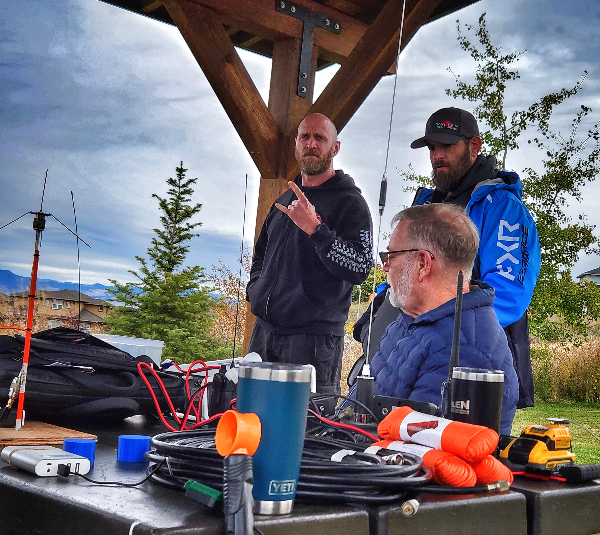
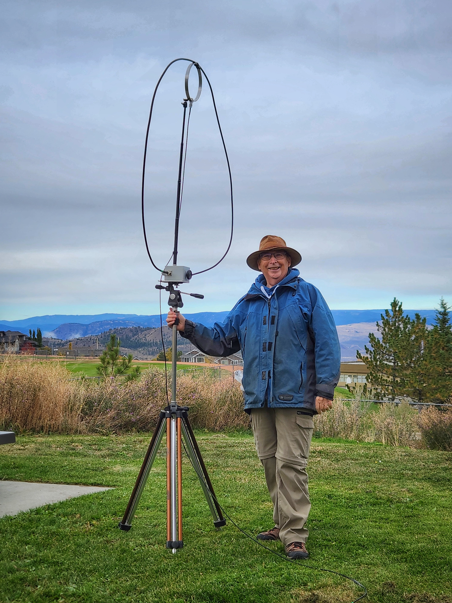
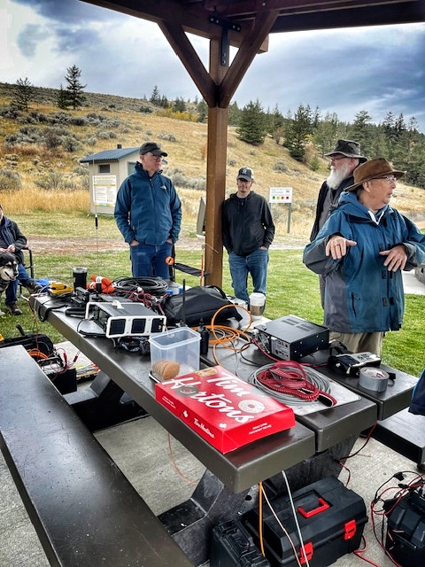

Fall Picnic 2024
Back to StoriesStory 803
Mon, 2024-10-14 15:30 — VA7AV

The annual KARC fall picnic was held on Sunday October 6th at the Aberdeen Longboard Park.
Three HF antennas were demonstrated, including an NVIS 40m dipole (Ralph VA7VZA), a vertical (Simon VE7RIZ) and a magnetic loop (Norm VE7APF).
Several contacts were completed on the HF bands, confirming that simple portable antenna antennas can be quite effective.

VHF/UHF handhelds and a mobile (portable) VHF rig also demonstrated the ability to communicate with repeaters and directly on simplex frequencies.

In addition, a Meshtastic node was set up on the 915 MHz ISM band to show the surprising range a simple device like this can have.
Members of the public stopped by to find out what we were doing, and we were able to reconnect with two local hams who haven't recently been active.
The picnic operations may have inspired more participation!